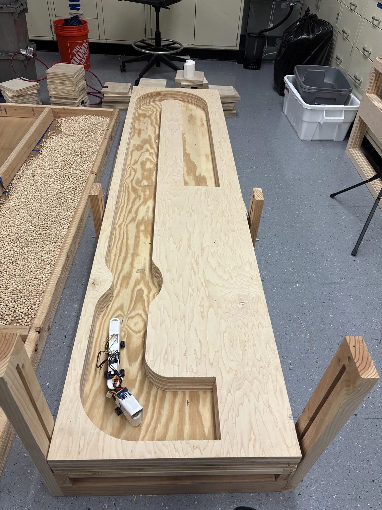
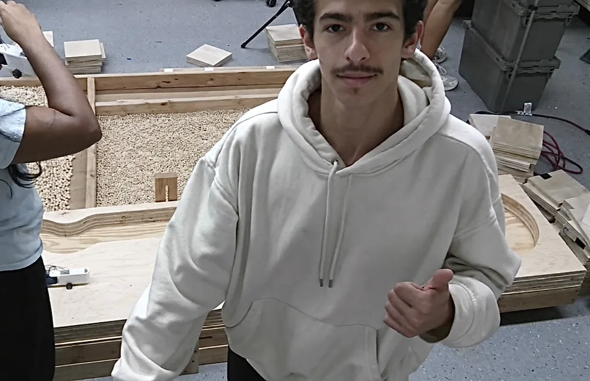
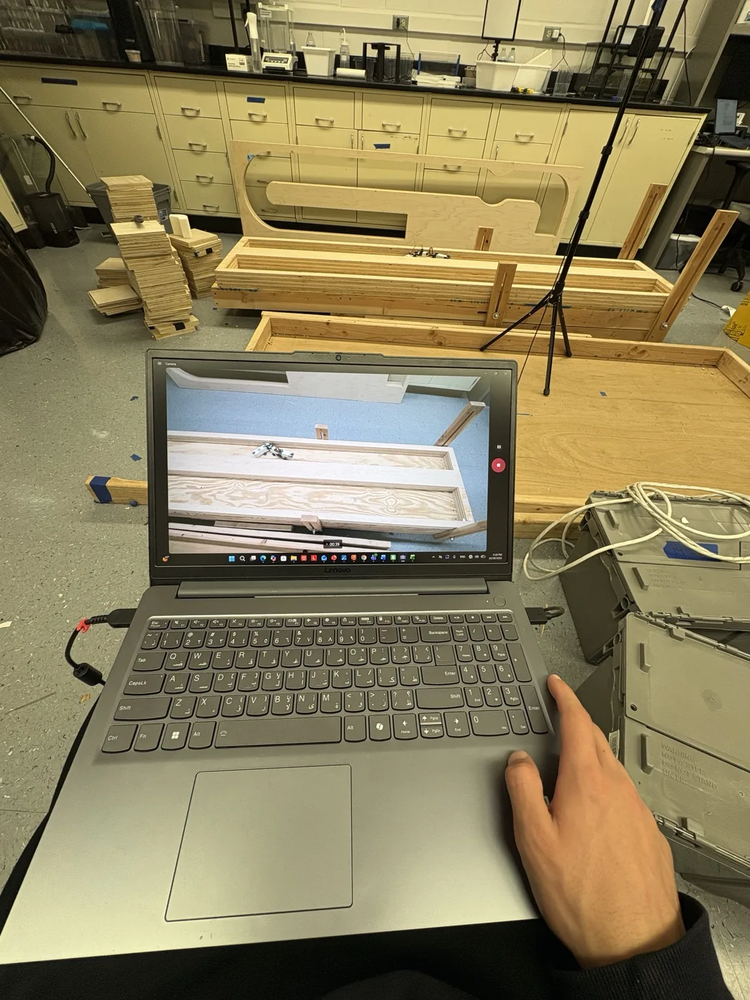
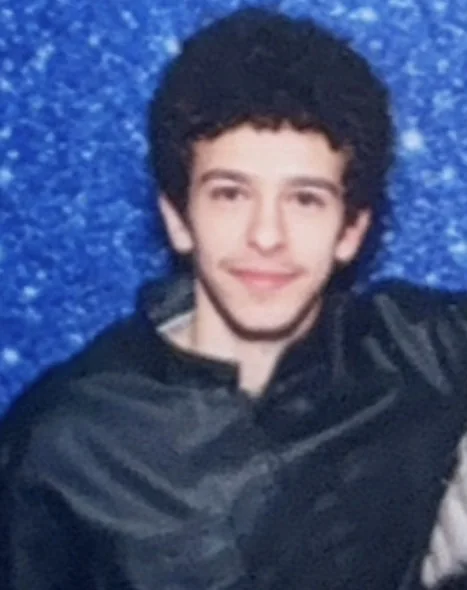

Current ResearchThree-Link Robot Locomotion
Built and supported experiments on wheeled three-link robots in curved and constrained tunnels, including setup work, video recording, and 3D-printed component design.
MECHANICAL ENGINEERING · ROBOTICS · RESEARCH
Mechanical engineering student at Penn State focused on robotics, prototyping, experimental research, and practical design.
I enjoy turning research questions into real experiments, building useful hardware, and learning how mechanical systems behave in the real world.

FEATURED WORK
Each card gives a quick overview. Click “See details” to jump to the full project section with more explanation, photos, and outcomes.

Current ResearchBuilt and supported experiments on wheeled three-link robots in curved and constrained tunnels, including setup work, video recording, and 3D-printed component design.
 Design Project
Design Project
Worked on a client-driven first-year engineering design project that later won the People’s Choice Award at the Engineering Design Showcase.
 Award-Winning Research
Award-Winning Research
Conducted supervised experimental research on cobalt oxide nanoparticles for emission reduction in automotive catalytic converters.
 Research Experience
Research Experience
Investigated dissolution enhancement and antimicrobial-related formulation behavior using solid dispersion and nanotechnology methods.
PROJECT DETAILS
My current work in Penn State’s Locomotion in Biology and Robotics (LiBR) Lab focuses on shape-changing wheeled robots, tunnel experiments, and prototyping.
We study how a three-link wheeled robot moves by changing its body shape. The robot has three rigid sections and two joints, and its motion depends on gait patterns, wheel orientation, and how it interacts with the surrounding surface.
A big part of the work is comparing theory and experiments: running physical tests in curved or constrained tunnels, recording the robot’s motion, and improving the hardware used in those experiments.



PROJECT DETAILS
Cubi was part of a client-driven engineering design project at Penn State. The project emphasized teamwork, design thinking, and communicating a solution clearly to an audience.
PROJECT DETAILS
Conducted supervised experimental research on cobalt oxide (Co₂O₃) nanoparticles for reducing carbon monoxide and nitrogen oxides in automotive catalytic converters.
PROJECT DETAILS

Worked on supervised pharmaceutical research focused on enhancing the dissolution and bioavailability of Morin hydrate using solid dispersion and nanotechnology methods.
RESEARCH & EXPERIENCE
A quick view of my academic and research experience so visitors can understand what I have done without reading everything first.
Robotics experiments, tunnel testing, 3D-printed component design, and experimental support for locomotion research.
Client-driven design work recognized with a People’s Choice Award at the Engineering Design Showcase.
Cobalt oxide catalytic converter research later recognized with a WYIE 2024 Silver Medal.
Pharmaceutical research on Morin hydrate dissolution and material characterization.
SKILLS & TOOLS
RECOGNITION
Recognized for research on cobalt oxide catalyst coating for emission reduction in catalytic converters.
Penn State Engineering Design Showcase · EDSGN 100 · Spring 2026.
ABOUT ME
I am a mechanical engineering student at Penn State with a strong interest in robotics, design, and applied research. I like learning by building, testing, and improving physical systems.
I’m currently looking to keep growing through undergraduate research, engineering project work, and future internship opportunities.
RESUMÉ & CONTACT
If you’d like to discuss research, project work, or opportunities, feel free to reach out.